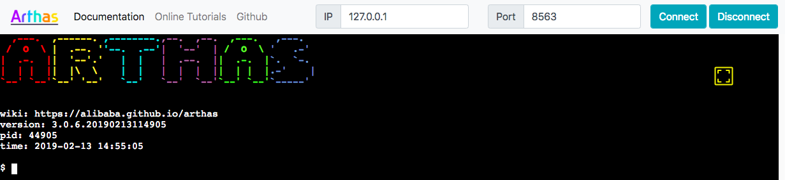

Arthas
来源于：https://arthas.aliyun.com/doc/advanced-use.html
Arthas：Java程序诊断利器，Arthas不能跟踪 native 函数。
安装
下载并执行：
curl -O https://arthas.aliyun.com/arthas-boot.jar
# 执行该程序的用户需要和目标进程具有相同的权限
# 日志在~/logs/arthtas 目录下面
java -jar arthas-boot.jar
第一次执行时，会下载arthas相关包（https://github.com/alibaba/arthas/releases/download/arthas-all-3.5.0/arthas-bin.zip），存储的默认路径在.arthas/lib/3.5.0/arthas下：
-rw-rw-r--. 1 lzq lzq 12817295 May 8 17:47 arthas-3.5.0-bin.zip
-rw-r--r--. 1 lzq lzq 8450 Sep 27 2020 arthas-agent.jar
-rw-r--r--. 1 lzq lzq 140961 Sep 27 2020 arthas-boot.jar
-rw-r--r--. 1 lzq lzq 430306 Sep 27 2020 arthas-client.jar
-rw-r--r--. 1 lzq lzq 13129766 Sep 27 2020 arthas-core.jar
-rw-r--r--. 1 lzq lzq 4497 Sep 27 2020 arthas-demo.jar
-rw-r--r--. 1 lzq lzq 402 Sep 27 2020 arthas.properties
-rw-r--r--. 1 lzq lzq 8903 Sep 27 2020 arthas-spy.jar
-rwxr-xr-x. 1 lzq lzq 3091 Sep 27 2020 as.bat
-rwxr-xr-x. 1 lzq lzq 7744 Sep 27 2020 as-service.bat
-rwxr-xr-x. 1 lzq lzq 32805 Sep 27 2020 as.sh
drwxr-xr-x. 2 lzq lzq 4096 Sep 27 2020 async-profiler
-rwxr-xr-x. 1 lzq lzq 635 Sep 27 2020 install-local.sh
-rw-r--r--. 1 lzq lzq 2020 Sep 27 2020 logback.xml
命令行使用（Console）
连接
java -jar arthas-boot.jar，选择attach的Java进程，会进入arthas的终端。
基础命令
echo（打印参数）
和linux里的echo命令类似
cat（打印文件内容）
和linux里的cat命令类似
grep（匹配查找）
类似传统的grep命令
# thread | grep -m 10 -e "TIMED_WAITING|WAITING"
$ grep [-A <value>] [-B <value>] [-C <value>] [-h] [-i] [-v] [-n] [-m <value>] [-e] [--trim-end] pattern
base64（base64编码转换）
和linux里的 base64 命令类似
# 对文件进行 base64 编码
$ base64 --input /tmp/test.txt --output /tmp/result.txt
# 对文件进行 base64 解码
$ base64 -d /tmp/result.txt --output /tmp/bbb.txt
tee（复制标准输入到标准输出和指定的文件）
tee指令会从标准输入设备读取数据，将其内容输出到标准输出设备，同时保存成文件。
pwd（返回当前的工作目录）
和linux命令pwd类似
cls（清空当前屏幕区域）
session（查看当前会话的信息）
reset（重置增强类）
重置增强类，将被 Arthas 增强过的类全部还原，Arthas 服务端关闭时会重置所有增强过的类
version（Arthas版本）
输出当前目标 Java 进程所加载的 Arthas 版本号。
history（打印命令历史）
打印命令历史。
quit（退出当前 Arthas 客户端，其他 Arthas 客户端不受影响）
退出当前的连接，可以用quit或者exit命令。Attach到目标进程上的arthas还会继续运行，端口会保持开放，下次连接时可以直接连接上。
stop（关闭 Arthas 服务端，所有 Arthas 客户端全部退出）
完全退出arthas，可以执行stop命令。
keymap（Arthas快捷键）
见链接：keymap
JVM相关
dashboard（系统的实时数据面板）
dashboard命令，当前系统的实时数据面板，查看进程的相关信息（包括线程信息，内存信息和配置信息）
- ID：Java级别的线程ID，注意这个ID不能跟
jstack中的nativeID一一对应。 - JVM内部线程，ID显示为-1，可以观测JVM的GC、JIT编译等占用CPU的事件；

thread（ JVM 的线程堆栈）
查看当前线程信息，查看线程的堆栈。
thread -i, 指定采样时间间隔；thread -b, 找出当前阻塞其他线程的线程；- 目前只支持找出synchronized关键字阻塞住的线程
jvm（JVM信息）
COUNT: JVM当前活跃的线程数DAEMON-COUNT: JVM当前活跃的守护线程数PEAK-COUNT: 从JVM启动开始曾经活着的最大线程数STARTED-COUNT: 从JVM启动开始总共启动过的线程次数-
DEADLOCK-COUNT: JVM当前死锁的线程数 -
MAX-FILE-DESCRIPTOR-COUNT：JVM进程最大可以打开的文件描述符数 OPEN-FILE-DESCRIPTOR-COUNT：JVM当前打开的文件描述符数
sysprop（JVM的系统属性）
查看或设置JVM系统属性
sysenv（JVM的环境变量）
查看当前JVM的环境属性，不能修改。
vmoption（JVM参数）
查看，更新JVM诊断相关的参数，比如：
- PrintGC 、PrintGCDetails等；
perfcounter（JVM的 Perf Counter信息）
$ perfcounter -d
Name Variability Units Value
---------------------------------------------------------------------------------
java.ci.totalTime Monotonic Ticks 3242526906
java.cls.loadedClasses Monotonic Events 3404
java.cls.sharedLoadedClasses Monotonic Events 0
java.cls.sharedUnloadedClasses Monotonic Events 0
java.cls.unloadedClasses Monotonic Events 0
logger（日志）
查看logger信息，更新logger level。
# 查看logger信息，包括level、appenders等
$ logger --include-no-appender
# 查看指定类加载器下的指定类名的logger信息
$ logger -c <hashcode> -n org.springframework.web
# 更新logger level
$ logger -c 2a139a55 --name ROOT --level debug
getstatic
推荐直接使用ognl命令，更加灵活
ognl
执行ognl表达式
-
收集Arthas里的一些特殊用法：https://github.com/alibaba/arthas/issues/71
-
OGNL表达式官方指南：https://commons.apache.org/proper/commons-ognl/language-guide.html
$ ognl '@java.lang.System@out.println("hello")'
# 类demo.MathGame的random静态字段
$ ognl '@demo.MathGame@random'
# -c 表示用hashcode 定位 ClassLoader， 默认不指定该配置时采用 SystemClassLoader
$ ognl -c 7f9a81e8 @org.springframework.boot.SpringApplication@logger
# 执行多行表达式，赋值给临时变量，返回一个List
$ ognl '#value1=@System@getProperty("java.home"), #value2=@System@getProperty("java.runtime.name"), {#value1, #value2}'
mbean
查看或监控 Mbean 的属性信息
# 查看 Mbean 的元信息
$ mbean -m java.lang:type=Threading
# 查看mbean属性信息
$ mbean java.lang:type=Threading
# 实时监控
$ mbean -i 1000 java.lang:type=Threading *Count
# 正则匹配
$ mbean -E java.lang:type=Threading PeakThreadCount|ThreadCount|DaemonThreadCount
heapdump
dump java heap, 类似jmap命令的heap dump功能。
vmtool
vmtool 利用JVMTI接口，实现查询内存对象，强制GC等功能。
# 强制GC
$ vmtool --action forceGc
# 获取对象，-x 指定结果的展开形式（默认1）
$ vmtool --action getInstances --className java.lang.String --limit 10 -x 2
# 指定ClassLoader获取对应对象，或者可以通过 -c 19469ea2 指定ClassLoader
$ vmtool --action getInstances --classLoaderClass org.springframework.boot.loader.LaunchedURLClassLoader --className org.springframework.context.ApplicationContext
# 获取bean并调用函数, getInstances action返回结果绑定到instances变量上，它是数组。可以通过--express参数执行指定的表达式。
$ vmtool --action getInstances --className org.springframework.context.ApplicationContext --express 'instances[0].getBean("userController").findUserById(1)'
class/classloader相关
sc（加载的类信息）
“Search-Class” 的简写，这个命令能搜索出所有已经加载到 JVM 中的 Class 信息，这个命令支持的参数有 [d]、[E]、[f] 和 [x:]。
sc -d <ClassName>：提取对应类的ClassLoader的hashcode
sm（加载的类的方法信息）
“Search-Method” 的简写，这个命令能搜索出所有已经加载了 Class 信息的方法信息。
sm 命令只能看到由当前类所声明 (declaring) 的方法，父类则无法看到。
jad（反编译）
jad com.example.Test对具体的类进行反编译成Java代码。
# --source-only选项，可以只打印源代码，反编译demo.MathGame的main函数
$ jad -c <classloader-hash> --source-only demo.MathGame main
mc（内存编译）
Memory Compiler/内存编译器，编译.java文件生成.class。
编译生成.class文件之后，可以结合retransform命令实现热更新代码。
注：mc命令可能失败。
retransform（覆盖JVM已加载类）
加载外部的.class文件，retransform jvm已加载的类。
- 如果不清除掉所有的 retransform entry，并重新触发 retransform ，则arthas stop时，retransform过的类仍然生效。
- 不允许新增加field/method；
- 正在跑的函数，没有退出不能生效（即只能下次再执行该函数时，才能生效）；
$ retransform /tmp/MathGame.class
# 查看retransform entry，TransformCount 统计在 ClassFileTransformer#transform 函数里尝试返回 entry对应的 .class文件的次数，但并不表明transform一定成功。
$ retransform -l
# 删除指定 retransform entry
$ retransform -d 1
# 删除所有 retransform entry
$ retransform --deleteAll
# 显式触发 retransform（对于同一个类，当存在多个 retransform entry时，如果显式触发 retransform ，则最后添加的entry生效(id最大的)）
$ retransform --classPattern demo.MathGame
dump（sh）
dump 已加载类的 bytecode 到特定目录
classloader
查看classloader的继承树，urls，类加载信息
# 按类加载实例查看统计信息（加载类数，hashcode，父类加载）
$ classloader -l
# 查看ClassLoader的继承树
$ classloader -t
# 使用ClassLoader去查找resource 或者类文件(java/lang/String.class)
$ classloader -c 3d4eac69 -r META-INF/MANIFEST.MF
# 使用ClassLoader去加载类
$ classloader -c 3d4eac69 --load demo.MathGame
监控跟踪
monitor（方法执行监控）
对匹配 class-pattern／method-pattern／condition-express的类、方法的调用进行监控。后台服务，一直监控，直到手动Ctrl+C。
监控的维度说明：
| 监控项 | 说明 |
|---|---|
| timestamp | 时间戳 |
| class | Java类 |
| method | 方法（构造方法、普通方法） |
| total | 调用次数 |
| success | 成功次数 |
| fail | 失败次数 |
| rt | 平均RT |
| fail-rate | 失败率 |
使用：假设primeFactors函数每秒生成个随机整数，并进行质因数分解
# 每5秒统计结果并输出，-c 指定统计周期，默认值为120秒
$ monitor -c 5 demo.MathGame primeFactors
# 默认，计算条件表达式过滤统计结果(方法执行完毕之后)，每次都先计算完，再筛选入参<=2的结果，params表述函数primeFactors的入参列表
$ monitor -c 5 demo.MathGame primeFactors "params[0] <= 2"
# -b 计算条件表达式过滤统计结果(方法执行完毕之前)，先筛选入参<=2，再计算并统计结果
$ monitor -b -c 5 com.test.testes.MathGame primeFactors "params[0] <= 2"
watch（查看数据）
详细用法：见 https://arthas.aliyun.com/doc/watch.html
方法执行数据观测，参数：
-b：在方法调用之前观察；-e：在方法异常之后观察；-s：在方法返回之后观察；-f：在方法结束之后(正常返回和异常返回)观察，默认值；-E：正则表达式匹配；-x：输出结果的属性遍历深度，默认为 1；-v：会打印Condition express的具体值和执行结果，方便确认是函数未执行还是条件表达式未匹配；
观察方法出参、this对象和返回值
- 观察表达式，默认值是
{params, target, returnObj}，即函数入参、当前对象的属性、返回结果
$ watch demo.MathGame primeFactors "{params,returnObj}" -x 2 -b
# 只有满足条件的调用，才会有响应
$ watch demo.MathGame primeFactors "{params[0],target}" "params[0]<0"
# 观察异常信息，表示异常信息的变量是throwExp
$ watch demo.MathGame primeFactors "{params[0],throwExp}" -e -x 2
# 按照耗时进行过滤，当耗时大于200ms时才会输出
$ watch demo.MathGame primeFactors '{params, returnObj}' '#cost>200' -x 2
# 访问当前对象的illegalArgumentCount属性
$ watch demo.MathGame primeFactors 'target.illegalArgumentCount'
trace（方法内部调用路径，并输出方法路径上的每个节点上耗时）
主动搜索 class-pattern／method-pattern 对应的方法调用路径，渲染和统计整个调用链路上的所有性能开销和追踪调用链路。
-n参数指定捕捉结果的次数；--skipJDKMethod true：默认情况下，trace不会包含jdk里的函数调用，将其设置为true可以监控；-v：会打印Condition express的具体值和执行结果，方便确认是函数未执行还是条件表达式未匹配；
# 方法调用路径的耗时，捕捉到一次调用就退出命令
$ trace demo.MathGame run -n 1
# 根据调用耗时过滤
$ trace demo.MathGame run '#cost > 10'
注：
trace在执行的过程中本身是会有一定的性能开销，在统计的报告中并未像 JProfiler 一样预先减去其自身的统计开销。- 渲染路径上调用的类、方法越多，性能偏差越大；
stack（输出当前方法被调用的调用路径）
$ stack demo.MathGame primeFactors
# 根据条件表达式来过滤，-n 执行次数限制
$ stack demo.MathGame primeFactors 'params[0]<0' -n 2
# 据执行时间来过滤
$ stack demo.MathGame primeFactors '#cost>5'
tt（TimeTunnel）
方法执行数据的时空隧道，记录下指定方法每次调用的入参和返回信息，并能对这些不同的时间下调用进行观测。
记录下当时方法调用的所有入参和返回值、抛出的异常会对整个问题的思考与判断非常有帮助。
记录结果的字段：
| 表格字段 | 字段解释 |
|---|---|
| INDEX | 时间片段记录编号，每一个编号代表着一次调用，后续tt还有很多命令都是基于此编号指定记录操作，非常重要。 |
| TIMESTAMP | 方法执行的本机时间，记录了这个时间片段所发生的本机时间 |
| COST(ms) | 方法执行的耗时 |
| IS-RET | 方法是否以正常返回的形式结束 |
| IS-EXP | 方法是否以抛异常的形式结束 |
| OBJECT | 执行对象的hashCode()，注意，曾经有人误认为是对象在JVM中的内存地址，但很遗憾他不是。但他能帮助你简单的标记当前执行方法的类实体 |
| CLASS | 执行的类名 |
| METHOD | 执行的方法名 |
命令的参数：
-t：记录每次执行情况；-n：指定需要记录的次数；-p：主动对一个INDEX编号的时间片自主发起一次调用，--replay-times指定 调用次数，通过--replay-interval指定多次调用间隔(单位ms, 默认1000ms)；-w, --watch-express：观察时空隧道使用ognl表达式；-i：指定记录的INDEX；
# 记录下当前方法的每次调用环境现场。
$ tt -t demo.MathGame primeFactors -n 3
# 解决方法重载，只记录入参格式为1的print函数
$ tt -t *Test print params.length==1
# 只记录入参第一个类型为Interger的print函数
$ tt -t *Test print 'params[1] instanceof Integer'
# 指定参数
$ tt -t *Test print params[0].mobile=="13989838402"
# 触发调用
$ tt -i 1004 -p
# 对于记录的INDEX为1000，调用类的静态方法
$ tt -w '@demo.MathGame@random.nextInt(100)' -x 1 -i 1000
注：
- ThreadLocal 信息丢失：很多框架会将一些环境变量信息塞到了发起调用线程的 ThreadLocal 中，由于调用线程发生了变化，这些 ThreadLocal 线程信息无法通过 Arthas 保存，所以这些信息将会丢失。
性能分析
profiler
profiler 命令支持生成应用热点的火焰图。本质上是通过不断的采样，然后把收集到的采样结果生成火焰图，基于async-profiler生成火焰图
- OS本身的权限/配置问题，然后缺少部分event，可以参考
async-profiler本身文档：async-profiler； - 默认情况下，arthas使用3658端口，则可以打开： http://localhost:3658/arthas-output/ 查看到
arthas-output目录下面的profiler结果：
# 启动
$ profiler start
# 获取已采集的sample的数量
$ profiler getSamples
# 查看profiler状态
$ profiler status
# 停止profiler，默认生成svg格式，可以指定为输出HTML
$ profiler stop --file /tmp/result.html
# include/exclude 来过滤，300秒后自动结束
$ profiler start --include 'java/*' --include 'demo/*' --exclude '*Unsafe.park*' --duration 300
鉴权
auth
验证当前会话：
- attach时，可以在命令行指定密码，如
java -jar arthas-boot.jar --username arthas --password ppp;
arthas.properties文件：
telnet console 连接到arthas后，直接执行命令会提示需要鉴权
HTTP API 验证：
- HTTP 标准的 Basic Authorization，用户名和密码通过":"组合并用Base64加密，然后设置头域
Authorization
curl 'http://localhost:8563/api' -H 'Authorization: Basic YWRtaW46YWRtaW4=' \
--data-raw '{"action":"exec","command":"version"}'
Web Console
Arthas目前支持Web Console，用户在attach成功之后，可以直接访问：http://127.0.0.1:3658/。
- 可以
--target-ip参数指定listen的IP，便可以通过其它ip进行访问； - web console中可以输入其它ip，连接到另外的arthas中；

Arthas Tunnel
通过Arthas Tunnel Server/Client 来远程管理/连接多个Agent。
比如，在流式计算里，Java进程可以是在不同的机器启动的，想要使用Arthas去诊断会比较麻烦，因为用户通常没有机器的权限，即使登陆机器也分不清是哪个Java进程。
在这种情况下，可以使用Arthas Tunnel Server/Client。
- 目前tunnel server没有专门的权限管理，用户需要自行开发，对app name鉴权；
- 希望部署多台 tunnel server，可以通过nginx做转发，redis来保存agent信息，nginx需要配置sticky session，保证用户web socket连接到同一个后端tunnel server（如ip_hash）；
网络连接流程：
Tunnel Server
https://github.com/alibaba/arthas/releases/download/arthas-all-3.5.0/arthas-tunnel-server-3.5.0-fatjar.jar
默认情况下，arthas tunnel server的web端口是8080，arthas agent连接的端口是7777。
启动之后，可以访问 http://127.0.0.1:8080/ ，再通过agentId连接到已注册的arthas agent上。
- 查看具体的连接信息的url
/actuator/arthas：登陆用户名是arthas，密码在arthas tunnel server的日志里可以找到
Tunnel Client
在启动arthas，可以传递--tunnel-server参数，比如：
- attach成功之后，会打印出agentId（或通过session命令打印出agentId）；
- 配置了
appName，则生成的agentId会带上appName的前缀；
Http API
Http API接口地址为：http://ip:port/api，必须使用POST方式提交请求参数。如POST http://127.0.0.1:8563/api 。
-
telnet服务的3658端口与Chrome浏览器有兼容性问题，建议使用http端口8563来访问http接口；
-
请求数据格式：
{
"action": "exec",
"requestId": "req112", // 可选请求ID，由客户端生成
"sessionId": "94766d3c-8b39-42d3-8596-98aee3ccbefb", // Arthas会话ID
"consumerId": "955dbd1325334a84972b0f3ac19de4f7_2", // Arthas消费者ID，用于多人共享会话
"command": "version",
"execTimeout": "10000" // 命令同步执行的超时时间(ms)
}
Action：
exec: 同步执行命令，命令正常结束或者超时后中断命令执行后返回命令的执行结果。async_exec: 异步执行命令，立即返回命令的调度结果，命令执行结果通过pull_results获取。interrupt_job: 中断会话当前的命令，类似TelnetCtrl + c的功能。pull_results: 获取异步执行的命令的结果，以http 长轮询（long-polling）方式重复执行init_session: 创建会话join_session: 加入会话，用于支持多人共享同一个Arthas会话close_session: 关闭会话
更详细的使用见：https://arthas.aliyun.com/doc/http-api.html
全局配置
options——查看或设置Arthas全局开关